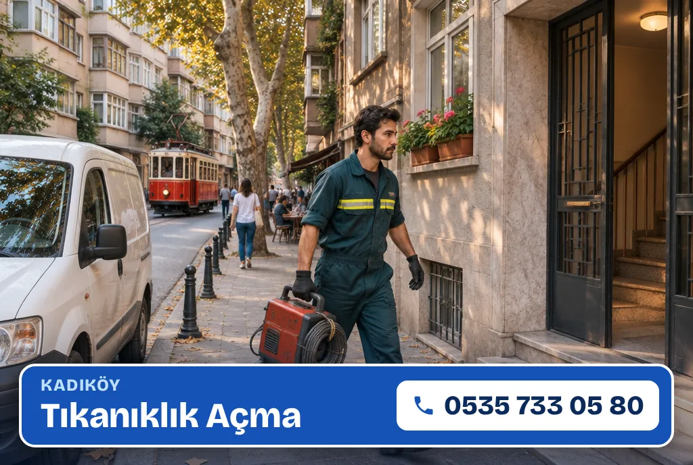

Eski apartmanlar
Döküm ve kurşun bağlantılı hatlarda makine ucu boruya göre seçilir; zorlamadan, kademeli çalışılır.
Kadıköy’de Moda, Yeldeğirmeni ve Göztepe gibi mahallelerde yarım asırlık apartmanlar hâlâ kullanımda; Fikirtepe ve Bağdat Caddesi hattında ise yeni binalar yükseliyor. Eski döküm borularla yeni PVC hatlar aynı yöntemle açılmaz. Kadıköy tıkanıklık açma işine bu yüzden borunun cinsini ve yaşını öğrenerek başlıyoruz.

Lavabodan ana hatta
Kadıköy’de zemin katların çoğu kafe, lokanta ve dükkân. Yağlı mutfak giderleri üst kat dairelerle aynı hatta buluşunca tıkanıklık bütün binayı etkileyebiliyor. Kadıköy gider açma taleplerinde dairenin kaçıncı katta olduğunu, sorunun tek giderde mi yoksa birkaç noktada mı görüldüğünü sorarak geliyoruz.
Aşağıdaki giderlerin hepsine Kadıköy’de aynı ekip bakıyor; ayrı ayrı usta aramanıza gerek yok.
İlçeyi tanıyarak çalışıyoruz
Döküm ve kurşun bağlantılı hatlarda makine ucu boruya göre seçilir; zorlamadan, kademeli çalışılır.
Moda ve Yeldeğirmeni’nde araç her kapıya yanaşamaz; makineyi elde taşıyıp binaya giriyoruz.
İş yeri mutfaklarında çalışma saatini servis yoğunluğunuza göre birlikte ayarlıyoruz.
Mahalle mahalle
Kadıköy ilçesinin bütün mahallelerine geliyoruz. Mahalleniz listede yoksa da arayın; adresinizi söylediğinizde ne zaman orada olabileceğimizi bildiririz.
Kadıköy için arayınDört adımda
Telefonda ilçeyi, adresi ve hangi giderin tıkandığını söyleyin.
Size en yakın ekip, gerekli makineyle adresinize doğru yola çıkar.
Tıkanıklığın yerini bulur, yapılacak işi ve ücreti başlamadan önce söyleriz.
Hattı açar, bol suyla akışı birlikte kontrol ederiz.
Merak edilenler
Kadıköy’e trafik durumuna göre takribi 40 dakikada ulaşıyoruz. Çarşı ve Moda içinde park sorunu varsa aracı uygun noktaya bırakıp yaya geliyoruz.
Ücret; tıkanıklığın yerine, hattın uzunluğuna ve kullanılacak yönteme göre değişir. Adreste hattı gördükten sonra yapılacak işi ve ücreti işe başlamadan önce söylüyoruz. Onayınız olmadan işlem yapmıyoruz.
Evet. Kadıköy’de gece, hafta sonu ve resmî tatillerde de çalışıyoruz. Günün hangi saatinde olursa olsun 0535 733 05 80 numarasını arayabilirsiniz.
Tıkanıklıkların büyük bölümü spiral makineyle, fayans ya da duvar kırılmadan açılır. Hatta kırık, çökme gibi bir hasar varsa bunu kamerayla gösterir, seçenekleri size anlatırız.
Anadolu Yakası
Beklemeyin, su taşmadan arayın. Ekibimiz yolda olsun.